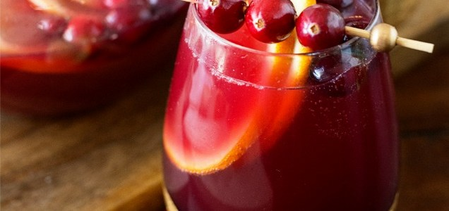

Cersei's Sangria

Ingredients
- 1 bottle cabernet sauvigon
- 1/2 cup sugar (optional)
- 1 dragon fruit
- 1 blood orange (sliced)
- 1 lime (sliced)
- 1 starfruit (sliced)
- 1 mango (sliced)
Instructions
- Pour the wine into a large pitch or serving container.
Add the lime, mango, blood orange and sugar to the wine
as desired. Chill 1+ hour (optional).
- Add the star fruit and dragon fruit to the wine last.
Otherwise they become quickly discolored. Serve with a
golden roast of beef and smashed potatoes.
- Enjoy your wine!